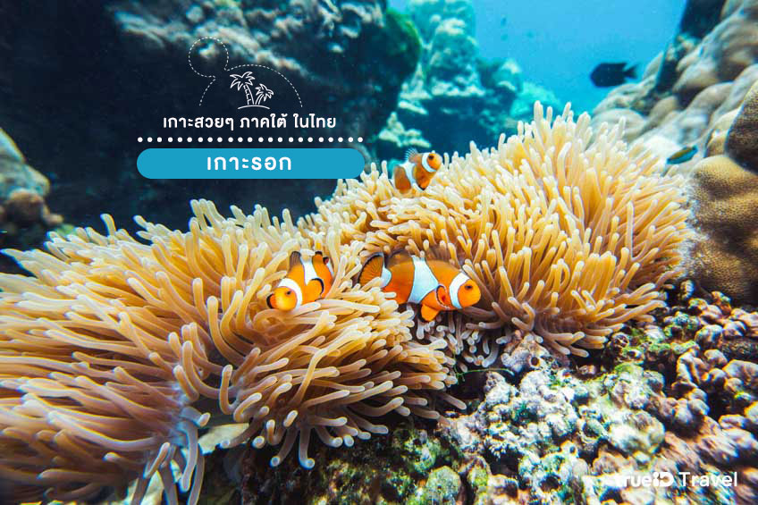
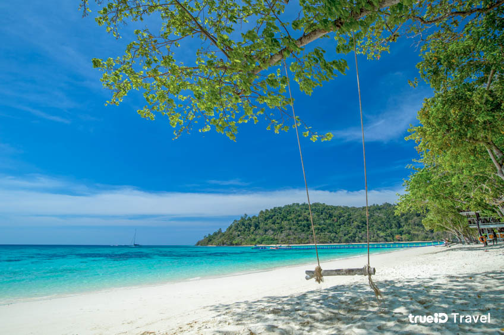

เกาะรอก กระบี่
เกาะรอก เป็นส่วนหนึ่งของอุทยานแห่งชาติหมู่เกาะลันตา จังหวัดกระบี่ ซึ่งแบ่งเป็น เกาะรอกนอก และ เกาะรอกใน และยังได้รับการขนานนามว่าเป็น “ราชินีแห่งอันดามัน” อีกด้วย เกาะสีเขียวที่โอบกอดด้วยน้ำทะเลสวยใส หาดทรายขาว เดินผ่อนคลายเหยียบทรายนุ่มๆ อาบแดดให้ผิวแทน เกาะรอกนั้นขึ้นชื่อในเรื่องของความสวยงาม รอบๆเกาะมีจุดดำน้ำตื้นหลายจุดเต็มไปด้วยกลุ่มปะการังและฝูงปลาที่มีความอุดมสมบูรณ์มาก เป็นเหมือนสวรรค์ของคนรักการดำน้ำเลยทีเดียว
เกาะรอกนั้นขึ้นชื่อในเรื่องของความสวยงาม รอบๆเกาะมีจุดดำน้ำตื้นหลายจุดเต็มไปด้วยกลุ่มปะการังและฝูงปลาที่มีความอุดมสมบูรณ์มาก เป็นเหมือนสวรรค์ของคนรักการดำน้ำเลยทีเดียว